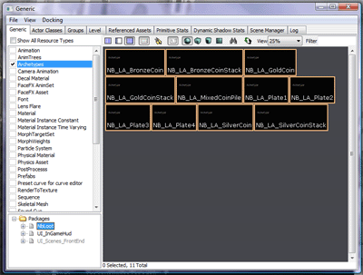
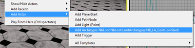
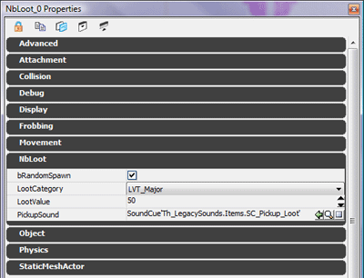
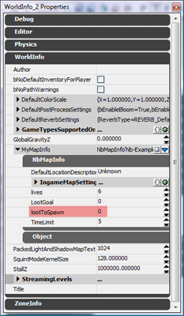
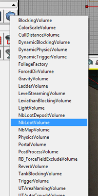
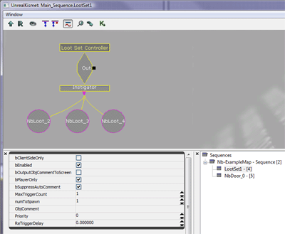

Loot Distribution Theory
Immortius :: May 11, 2008
Loot is a fundamental part of Nightblade. The placement and distribution of loot can drastically affect the balance of a map.
The goal is to place loot so that the guard team needs to stretch itself to guard the loot, while at the same time ensuring thieves need to steal a sufficient amount from guarded areas, and not simply steal from unguarded areas.
One way of placing loot is to have a number of clumps of loot, each of which can be guarded by a guard while being spread out enough that a guard cannot simply stand still to protect the entire clump. The loot goal for thieves can then be set so that thieves have to steal a reasonable amount from these clumps. There should be enough clumps so that guards have to spread out to guard them successfully. In addition there may be a smattering of loot to fill out the rest of the map.
-:-
Loot Archetypes
Immortius :: May 11, 2008
To aid in the placement of loot, it is recommended that archetypes are used. Archetypes are basically preconfigured actor templates. Actors created from archetypes have the archetype's settings as their default values, which can then be overridden for that instance. If an archetype is later updated then all instances of the archetype will have their non-overridden settings updated.
For Loot the main benefit of using archetypes is that it ensures the value of the a given loot item is consistent both within and across maps. This can aid players in waking intelligent decisions about what to steal and what to guard. A number of loot item archetypes are provided in the NbLoot package.

To place a loot item from an archetype:
1. Select the archetype you wish to place in the generic browser.
2. Rigth-click in a viewport and select Add Actor -> Add Archetype.

To create a new loot archetype:
1. Select the static mesh you wish to make into a loot item in the generic browser.
2. Right-click in a viewport and select Add Actor -> Add NbLoot.
3. Select the loot item and open its properties. The NbLoot section contains the loot specific settings. These are:
bRandomSpawn - If set to false then the item will be ignored by the loot randomisation system. You should leave this true for archetypes and set it false on any specific instances you want to always exist.
LootCategory - This determines how much the loot is worth. The settings are:
- LVT_Trivial (5)
- LVT_Minor (20)
- LVT_Major (50)
- LVT_Superior (100)
- LVT_Godly (250)
- LVT_Custom
LootValue - If the loot category is set to LVT_Custom, then this is the value that is used.
PickupSound - What sound the player picking up the item will hear.
Set the loot category of the loot.

4. Right-click the loot item and select Create Archetype. Select which package and group to save the archetype in, and set a name for the archetype. If you want to store the archetype in the map then set the package name to the map's file name.
-:-
Controlling Loot Distribution and Randomisation
Immortius :: May 11, 2008
It is possible to set up a Nightblade map so that loot is randomised each game. There are a few different systems that can be used either individually or together to do this:
Map-wide Loot Randomisation
In the World Info properties of your map, in the NbMapInfo object is a setting called LootToSpawn. If this setting is given a value other than 0, then each game loot will be randomly destroyed until the amount of loot remaining is under this amount. So to have basic, map wide loot randomisation set this value to a value under the amount of loot in your map.

Volume Based Loot Randomisation
It is also possible to set the LootLimit of an area within a map, which will override the Map-wide Loot Randomisation (loot in the area will still count againt total map loot for the purposes of the deleting loot to get it under the map-wide loot limit, but will not be removed to achieve this).
1. Edit the builder brush to form the shape, size and position of the area you wish to set a specific loot limit on.
2. Right-click on the Add Volume button and select NbLootVolume.

3. In the volume's properties under the NbLootVolume section, set the loot limit.
Loot Sets
A final option is to set up a loot set - a group of loot items, of which a certain number will exist each game. This can be used to have an unusually valuable item which can be in multiple positions, but should exist in one and only one of those positions each game. Or a set where 3 out of 5 items should exist each game, and so on. This takes priority over the other two randomisation techniques.
1. Open the Kismet Editor.
2. Right click in the editor, and choose Create New Sequence. Give the sequence a sensible name and then double click it. This gives your loot set a different space to the rest of the sequences.
3. Right click in the editor, and choose New Event -> NbLoot -> Loot Set Controller.

4. Add the loot items you want to be part of the loot set into the sequence as object variables, and connect them to the Instigator node on the Loot Set Controller.
5. Set the numToSpawn option in the Loot Set Controller option.

-:-
Getting Information on Loot in a Map
Immortius :: May 11, 2008
The console command AnalyseLoot will produce a break down on the various Loot Sets and Loot Volumes in a map, how much loot is in each one and what limits have been set on loot to spawn. It also reports how much loot exists outside of all loot sets and volumes, the overall loot limit for the map and the total amount of loot in the map.
-:-


{kind=link}
{kind=link}
{kind=link}
{kind=link}
{kind=link}
{kind=link}